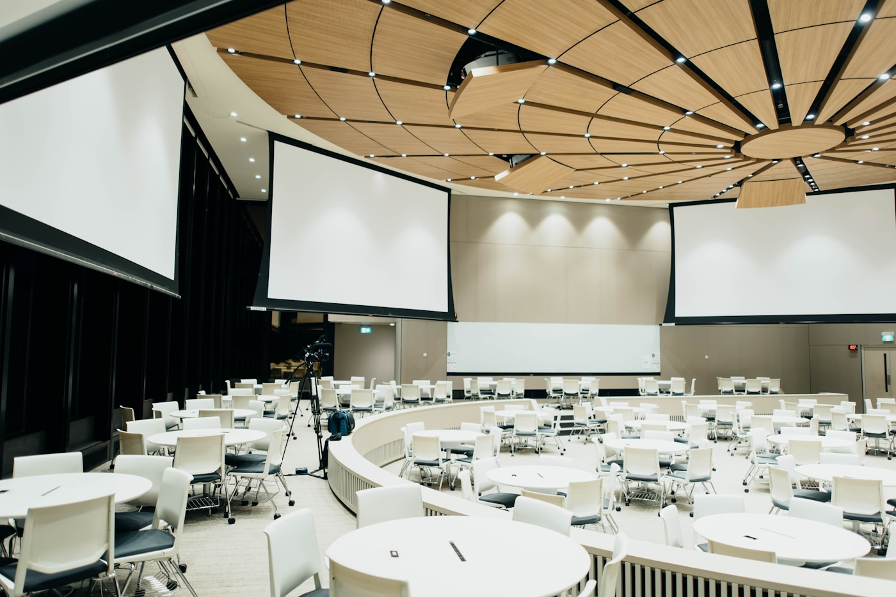
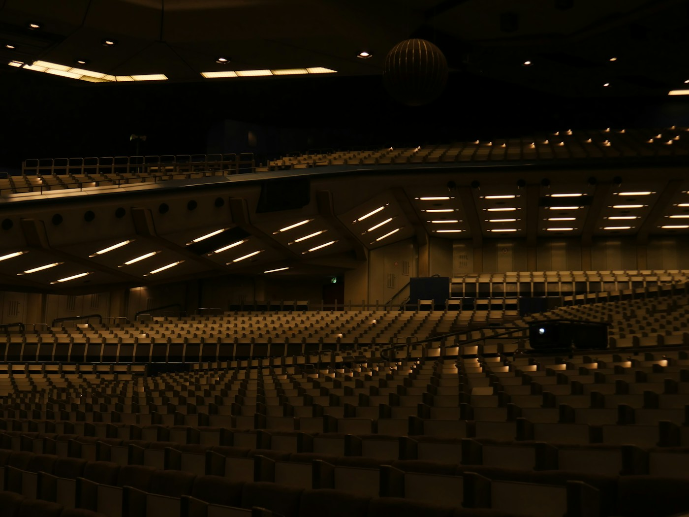

沈黙は、無知ではない
あなたはいま、この記事を日本語で読んでいる。英語圏のAGI時期論を日本語圏に輸入する記事ではなく、日本語圏が米国型時期論を輸入する構造そのものを検査する記事である。読了後、あなたはこれを英語に翻訳しないだろう。翻訳する動機も、翻訳した場合の読み手も、用意されていないからだ。その「しない」と「用意されていない」の間に、本稿が扱う構造がある。あなたはすでに本稿の検査対象である。
日本のAGI議論の不在は、通常こう語られる。研究者が時期論を発信しない、企業が投資家向けに到達年次を示さない、官庁が「AGI」を定義しない、資本が独自の時期予測を持たない——四層すべてが沈黙している、だから日本は遅れている、と。本稿はこの診断を採らない。沈黙は遅れの症状ではなく、別の時間論理が米国型時期論のフォーマットに翻訳される回路を持たない状態のことである。能力の欠如ではない。言葉の欠如でもない。翻訳の欠如である。
この区別は決定的である。欠如モデルに立てば、解決策は「日本も時期論を発信しよう」になる。輸入モデルに立てば、解決策は「輸入しようとしている対象が何なのかを先に解剖する」になる。本稿は後者を選ぶ。AI 2027もSituational Awarenessも、予測を装った資本動員の装置である。その構造を見抜いた上で、日本に既にある別の時間論理を言語化する作業に入らない限り、輸入は常に一段遅れの輸入に終わる。
時期論は、真理命題ではない
米国型AGI時期論の代表二文書——『AI 2027』[9]と『Situational Awareness』[10]——を、中身ではなく制作と流通の経路から読む。両者は予測として流通しているが、制作動機と受益構造を見ると、予測の形をした資本動員装置であることがわかる。日本に欠けているのはこの種の装置であり、予測能力ではない。
AI Futures Project (501c3非営利)が制作。著者は元OpenAIガバナンス研究者Daniel Kokotajlo、Eli Lifland、Thomas Larsen、Romeo Dean。編集協力はブロガーScott Alexander(Astral Codex Ten)[22]。財団寄付とグラントで運営される政策動員型のシナリオ・ジャーナリズムであり、MIRIをはじめとするAI安全性コミュニティの人脈ネットワークと接続されている。Kokotajloは2024年にOpenAIの非開示契約を拒否して退社したことで既に可視化されていた人物であり、その退社劇自体が『AI 2027』の信憑性を政策サークルに届けるためのナラティブ資本として機能した。
元OpenAI Superalignmentチーム在籍のLeopold Aschenbrennerが2024年6月に165ページの『Situational Awareness: The Decade Ahead』を公表[10]。その2ヶ月後の2024年9月、同名のヘッジファンドSituational Awareness LPを立ち上げた[21]。シード投資家はNat Friedman、Daniel Gross、Patrick & John Collison。2025年中頃に運用資産$1.5Bを突破、2025年上半期で手数料控除後47%のリターンを記録した[21]。論文は運用会社のthesis documentであり、時期論の具体性がそのままファンドのポジションの正当化になっている。
ここで重要なのは、両文書が「嘘」だと言っているのではないことだ。Kokotajloは真剣にシナリオを書き、Aschenbrennerは真剣にthesisを公表している。問題は別のところにある。時期論は真理命題のように流通するが、制作される動機の大半は資本と政策の動員にある。外れても発信者が損をしない仕組みが先に組まれている。外れれば「シナリオの一つ」と言えばよく、当たれば立場が跳ね上がる。非対称のベット構造がすでに埋め込まれている。
この装置は米国の特定の制度環境に依存している。非課税501(c)(3)経由の政策シンクタンク型コミュニケーション、成功報酬型ヘッジファンドの届け出体系、ベイエリアの個人投資家ネットワーク、そして政治資金とAIコミュニティを媒介する「rationalist community」という読者層。これら全てが結合して、時期論を書くことが金融商品になる生態系を作っている。日本にはこの生態系が存在しない。だから日本に『AI 2027』の日本版は生まれない。能力の問題ではなく、言説を投機資産化する配管が接続されていないという制度的事実である。
4層を、翻訳不在として読み直す
前節で時期論を装置として解剖したので、日本の4層に戻る。ここで並ぶ情報は欠如の棚卸しではなく、米国型投機装置に翻訳されなかった独自の時間認識として読み直す。
| 層 | 主要プレイヤー | 発信していない「米国型時期論」の代わりに、何を発信しているか |
|---|---|---|
| 研究 | 松尾研究室(東大)、理研AIP、NII、WBAI(山川宏)、Third Intelligence | 松尾豊は「5〜10年、もっとかかるかもしれない」[2]。山川宏はNAIAビジョンで時期を具体化せず、インフラと安全性を論点化[1]。年次を刻まない発言は、不確実性の誠実な表現であり、米国型投機装置のthesisに変換しない判断でもある。 |
| 産業 | Preferred Networks(西川徹/岡野原大輔)、Sakana AI(David Ha / Llion Jones)、Third Intelligence(松尾) | PFNは国産生成AI「PLaMo」を開発、2025年9月にさくらインターネット・NICTと基本合意[3]。Sakana AIは2025年11月にシリーズBで約$135M〜$200Mを調達[4]。基盤モデル開発は活発。時期論を投資家向けメッセージに含めない。「thesis document型IR」の形式自体が選ばれていない。 |
| ガバナンス | AI戦略会議(松尾座長)、経産省、総務省、デジタル庁、IPA | AI事業者ガイドライン第1.1版(2025-03)[5]、行政調達ガイドライン(2025-05)[6]。「AGI」「時期」「到達」を公式文書で定義しない。定義しない選択は、米国の大統領令や英AISIと異なる規制時間軸(能力閾値ではなく事業者行為ベース)を採用していることの表れ。 |
| 資本 | JIC、ANRI、ソフトバンク、経産省補正予算、国産AI 1兆円5年計画 | 2024年度補正でABCI 3.0(NVIDIA H200 × 6,128基)[7]。2025年1月から富岳NEXT開発開始[8]。金額は動くが「いつAGIか」のthesisを組まない。これは米国型VCモデルに対する構造的拒否であり、年次ベース補正予算という日本固有の時間スケールに忠実であろうとしている。 |
この表の意味を、前回の本稿(およそ3日前に公開した初版)から書き換える。ハードも資本も動いているのに時期論だけが動いていない、という並列の不整合として読むのではない。4層すべてが、米国型投機装置に翻訳されない独自の時間認識を、それぞれの層の論理で発信している。松尾の「幅」、山川のインフラ先行、PFNの基盤モデル集中、行政の非定義、補正予算の年次ベース。どれも「いつか」という問いに米国型で答えないだけで、それぞれの層の時間論理の中では一貫した発信である。
NAIAの沈黙は、戦略である

日本発のAGI関連提言のなかで、最も体系的で、かつ最も意識的に時期論を避けているのが、山川宏代表理事の一般社団法人AIアライメントネットワーク(ALIGN)が2025年3月17日にJSAI2025 汎用AI研究会で発表した「NAIAビジョンの提案」[1]である。機械倫理の創発(EME)、アラインメントとモニタリング、外交と安全保障、動的適応リスクゲート(DAR-G)および統合行動リスク枠組(IBRF)を運用する国際機関NAIAの設立——4つの戦略のいずれも、AGI到達後の共生条件を設計するためのものであり、AGIがいつ到達するかは前提に置かれるが、主題にはならない。
これは失敗ではない。むしろ意識的な戦略である。山川は全脳アーキテクチャ・イニシアティブ(WBAI)を2015年から主導し[13]、脳参照アーキテクチャ駆動開発の技術ロードマップを2023年にJSAIで発表している[14]。10年以上にわたって、時期を断定する発信を避け、インフラと制度設計を優先してきた。この一貫性は、日本型の時期論発信戦略として読むべきである。時期を刻まないことで、政治的コミットメントの最小化と、複数省庁・複数企業・複数大学にまたがる長期調整の両立を確保している。
米国型の時期論発信は、発信者個人がファンドや政策サークルにアクセスするための個人資産化の経路である。日本型の時期論回避は、逆方向の戦略である。個人のコミットメントを下げることで、長期調整に必要な協調空間を維持している。どちらが正しいという話ではない。異なる制度環境で、異なる最適解が選ばれているという話である。
WIRED.jpが2025年に掲載した石井敦(Turing)×山川宏×工藤郁子(大阪大学)の鼎談[15]では、山川が「自己改善が加速すれば、AGIや超知能は近未来になる可能性がある」と踏み込んだ発言をした。公式文書では言わないことが、対談では言える。これは個人の気まぐれではなく、制度文書と対談という発信経路ごとに責任の重さが異なる、日本型言説空間の構造である。米国では個人ブログも論文もpodcastも同じ責任帯域で発信が動く(だからKokotajloは退社と同時に『AI 2027』を発信できる)。日本では、経路によって発言の重さが変わり、発言者はその重さを使い分ける。重い経路では幅を持たせ、軽い経路では踏み込む。
沈黙の中に、すでに言説はある

日本に時期論の言説がないわけではない。日本語で書かれた技術論、社会論、哲学のなかに、AGIに向き合うための語彙はすでに厚く存在する。ただしそれらは米国型AGI時期論のフォーマット(年次・確率・到達点)に翻訳される回路を持たない。言説はある。翻訳がない。翻訳の不在が構造の核である。
反時期論の実証的伝統
新井紀子『AI vs. 教科書が読めない子どもたち』(2018)[30]以降の一貫した反時期論は、「AIが何を読み取っているか」を教育現場のデータで突き詰める実証的アプローチで、時期論の抽象性に対抗する。「東ロボくん」プロジェクトは東大不合格という結論を出して終わったが、その終わり方こそが日本型時期論への実証的応答だった。岡野原大輔『大規模言語モデルは新たな知能か』(2024、岩波科学ライブラリー)[29]は、LLMの能力を到達点の問題ではなく、認識論の問題として扱う。
自然主義的計算論
鈴木健『なめらかな社会とその敵』(2013、勁草書房)[28]は、民主主義と市場を連続変数として書き直し、計算と社会の境界を消す。米国型AGI時期論が「AI vs. 人間」という離散的対立を前提とするのに対し、鈴木は離散を置かない。技術と社会を同じ勾配のなかで扱う語彙は、日本語圏のスマートコントラクト論・DAO論の基底に流れている。ただしこの語彙は英語圏の「AI safety」議論には翻訳されていない。
哲学・批評の系譜
柄谷行人『世界史の構造』(2010)・『力と交換様式』(2022)[23]は、技術と交換様式の接続を扱う。交換様式D(互酬性の高次回復)は、AGI時代の再分配構造を議論するための語彙になりうる。東浩紀『観光客の哲学』(2017、ゲンロン)[24]と『訂正する力』以降の情報環境論は、誤配と偶然性の哲学を技術論に接続する。廣松渉『事的世界観への前哨』(1975)[25]と中沢新一『レンマ学』(2019)[26]は、非ロゴス的・非線形的な認識の様式を、アラインメントの設計語彙に翻訳する余地を残している。
これらに共通するのは、時間を単一の軸に還元しないという態度である。米国型AGI時期論が「2027年」という離散的な点に賭けるのに対し、日本語圏の知的伝統は時間を層・幅・誤差・循環・熟成として扱う語彙を持つ。だからこそ、米国型フォーマットに翻訳しようとすると決定的な情報が削げ落ちる。「2027年に到達する」と書くのは簡単だが、「誤配の蓄積が相転移の幅のなかで熟成している」と書いた瞬間に、英語圏の政策サークルで流通する形式から外れる。
翻訳の不在には二つの方向がある。日本語から英語への翻訳が成立していないこと。そして、英語圏の時期論の問いを日本語に翻訳したときに、日本語の語彙では違う問いになってしまうこと。後者が特に重い。「When will AGI arrive?」を「AGIはいつ到来するか」と訳すと、日本語の時間感覚ではこの問い自体が教科書的で浅薄に響く。より日本語的な問いに翻訳すると「AGIと呼ばれる状態は、すでにどの層で始まっているか、あるいはすでに終わっているか」に近くなる。問いの翻訳が成立しないところで、答えの翻訳を要求しても空振りする。
単一時計の代わりに、何を持ち込むか
前節までで、米国型時期論が単一の時計に賭ける投機装置であり、日本に翻訳されない理由が制度的・言語的に複合していることを見た。しかしここで議論を「日本にも厚い時間論の伝統があります」という文化論で閉じれば、本稿はAGI分析からは離れる。本節の主張は逆である。日本の時間論は文化資産ではなく、AGI分析のための代替ツールキットである。米国型時期論では見えない論点が、日本語圏の時間語彙に乗せ替えると見える。三つの具体例を出す。
第一に、和辻哲郎『風土』(1935)[31]の時間論。和辻は時間を風土の反復のなかで捉え、進歩ではなく継承として論じた。これをAGI分析に適用すると、「いつAGIが来るか」という単一時計の問いは、複数の時間スケールに分解される。短期(四半期〜年)では市場評価・スタートアップ調達・政策議論の駆動力が動く。中期(年〜十年)では労働・教育・研究体制の組み替えが進む。長期(十年〜世紀)では知の分業と人間の自己規定が変わる。永遠(非時間的)には「知能とは何か」という存在論的問いがある。「いつAGI」は、この4層を一本に潰したラベルである。米国型時期論はこの分岐を不可視化する。日本語圏の重層時間観は、議論を「あなたが話しているのはどの層か」で切り分ける道具になる。
第二に、丸山真男「歴史意識の『古層』」(1972)[32]の「つくる」と「なる」の差。丸山は日本の歴史意識に「なる」「つぎつぎに」「いきほひ」という基底のカテゴリーを見出し、直線的進歩史観との差を分析した。この区別は、LLMの実態に直接接続する。LLMは設計された到達(つくる)ではなく、創発としての到達(なる)である。だから「いつGPT-nがAGIになるか」ではなく、「いつそれがAGIだったと遡行的に同定されるか」が正しい問いの形になる。これは文化論ではない。Sam AltmanもDario Amodeiも「AGIの定義は確定しない」と繰り返している事実が、この認識論的構造を裏書きする。「なる」論理は、LLMの実態をより正確に捉える分析言語として、米国型時期論より精度が高い。
第三に、仏教の本覚思想。本覚は「悟りは既に具わっており、あとは顕現の様式の問題である」と論じる。これをAGIに翻訳すると、議論の重心が決定的に動く。事前学習済みモデルには既に多くの能力が潜在している。RLHF、スキャフォールディング、ツール使用、メモリ拡張、マルチエージェント編成——これらは新しい能力を作っているのではなく、既に潜在する能力を顕現させている。だから「いつAGIが生まれるか」は誤った問いで、「どの能力が、どの文脈で、どの様式で顕現するか」が正問になる。これはAnthropicの機械的解釈可能性研究(モデル内に既にある回路の発見)とも、Sakana AIの進化的モデルマージ[18](既存モデルの組み合わせから能力を引き出す)とも整合する。本覚という非西洋語彙は、現在のAI工学が経験的に発見しつつある事実を、先回りして言語化していた。
三つに加えて補助線を引いておく。アラインメント議論を支配する語彙は「制御」「整列」「服従」(controlled, aligned, obedient)であり、これらは主体-客体の支配関係を前提にしている。もののあはれや感応といった日本語圏の語彙は、主体と客体が相互変容する関係を扱う。学術として強い主張ではないが、少なくとも米国型「支配論」の一択に疑問を投げる補助線にはなる。アラインメントを「整列させる」のではなく「共振の様式を設計する」と言い換えたとき、何が失われ何が見えるかは、別途検証する価値のある問いである。
注意点を一つ。加藤周一『日本文化における時間と空間』(2007)[27]が指摘したように、日本の時間論理は長期目標設定が弱く、短期最適の積み上げに流れる構造的な弱点を持つ。本稿は日本の時間論を「米国に勝る代替」として持ち上げているのではない。米国型単一時計と日本型重層時間は、それぞれ別の弱みを抱えた別のツールである。重要なのは、AGI議論を米国型一択で進めれば、層・創発・潜在性という分析軸が初期設定から欠落するという事実だ。翻訳の不在は、議論の精度の損失である。時期論を輸入する代わりに、これらの分析道具を翻訳可能な形式で輸出することが、日本語圏がAGI議論に対して出せる、唯一固有の貢献になる。
時計は、一本ではない
1975年、ある哲学者が東京で『事的世界観への前哨』[25]を世に出した。時間は実体ではなく関係の構造であり、主体と客体は同じ運動の両面であるという議論を、ドイツ観念論の語彙とマルクス主義の語彙を混ぜて書いた。当時、コンピューターはまだ大学と企業の一部にしかなかった。その本を読んだ読者のほとんどは、何十年も先のAI時代にこの議論が使われるとは想像していなかった。
2010年、柄谷行人が『世界史の構造』[23]を出した。交換様式A・B・Cの結節としての資本制国家を解剖し、その先に交換様式Dの可能性を位置づけた。技術が交換様式を書き換える契機として扱われるが、どの年次にそれが起こるかは問われていない。離散的な到達点ではなく、層として既に始まっている運動として、書かれている。
2024年、Leopold Aschenbrennerが『Situational Awareness』[10]を世に出し、2ヶ月後に同名のヘッジファンドを立ち上げた[21]。2025年、AI Futures Projectが『AI 2027』[9]を出し、政策サークルに直接届けた。二つの文書が共有しているのは、時間を一本の軸に収束させ、年号を賭け、外れた場合のコストを発信者が引き受けない構造を先に組んだ上で、予測を発信したことである。
この二つの流れが、同じ時代を生きている。片方は時期論を投機資産として流通させる生態系のなかで書かれ、もう片方は時期論を最初から必要としない時間論理のなかで書かれた。日本が沈黙しているように見えるのは、後者の流れが米国型前者のフォーマットに翻訳されていないからで、前者の空席が日本に空いているからではない。空席は、最初から前者の座標系の中だけに存在する空席である。
日本がAGI議論に参加する経路は、だから二つある。一つは、米国型投機装置を輸入する道。2027年なり2029年なりを誰かが日本で最初に言い切り、メディアに流し、政策サークルへの入場券にし、資本を動員する。この道は通る。通ったことを誰も後戻りできない。もう一つは、前節で出した分析道具——層状時間、なる論理、本覚としての潜在性——を翻訳可能な形式で輸出する道である。これは通ったことがない。通せるかどうかもわからない。ただし通せば、議論の形式そのものを変える可能性がある。「いつAGIか」ではなく「どの層で何が顕現しているか」を共通言語にできれば、米国型単一時計の支配は緩む。
2027年、日本のどこかで、誰かが「2029年までに到達する」と言い切る日が来るかもしれない。その日、全国紙の一面にその発言は並ぶ。翌週、金融市場が動く。その日付は、もしそれが起きれば、2026年から2027年にかけて日本で書かれた(あるいは書かれなかった)時間論理の翻訳作業によって、遡行的に意味を書き換えられる。翻訳が成立していれば、その発言は米国型投機装置の下請けではなく、別の時間論理からの発話として読まれる。翻訳が成立していなければ、発言は遅れて到着した米国版として消費される。
1975年に書かれた時間論は、2027年の時期論を先に書き終えていた。ただし、それを読める言葉に翻訳する作業を、日本はまだしていない。
まだ、読める人が、いない。